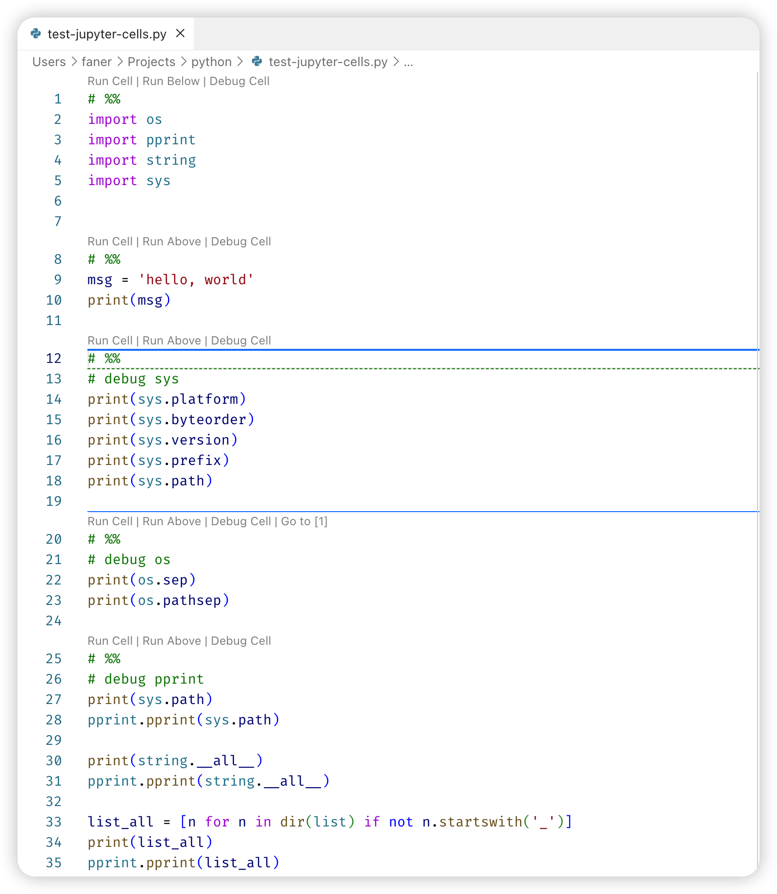
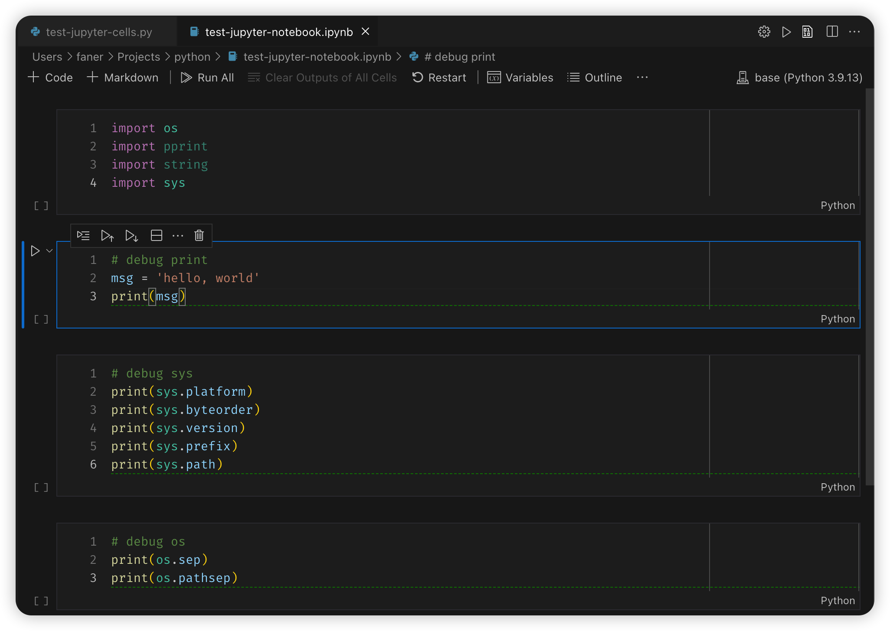

vscode Jupyter Notebook
vscode 中 Jupyter Notebook 使用简介。
vscode Jupyter#
- Setting up your environment
- Workspace Trust
- Create or open a Jupyter Notebook
- Running cells
- Save your Jupyter Notebook
- Export your Jupyter Notebook
- Work with code cells in the Notebook Editor
- Table of Contents
- IntelliSense support in the Jupyter Notebook Editor
- Variable Explorer and Data Viewer
- Saving plots
- Custom notebook diffing
- Debug a Jupyter Notebook
- Connect to a remote Jupyter server
- Data Science profile template
- Jupyter code cells
- Using the Python Interactive window
- Variables Explorer and Data Viewer
- Connect to a remote Jupyter server
- Convert Jupyter notebooks to Python code file
- Debug a Jupyter notebook
- Export a Jupyter notebook
Jupyter 插件已经 Deprecated，只需要安装 Microsoft Python 插件即可，微软官方提供了 Python 插件已经内嵌打包了 Jupyter 插件（可通过 Extension Pack 查看）。
-
Python: IntelliSense (Pylance), Linting, Debugging (multi-threaded, remote), Jupyter Notebooks, code formatting, refactoring, unit tests, and more.- Extension Pack:
Pylance,Jupyterandisort.
- Extension Pack:
-
Jupyter: Jupyter notebook support, interactive programming and computing that supports Intellisense, debugging and more.- Extension Pack:
Jupyter Keymap,Jupyter Notebook Renderers,Jupyter Slide Show,Jupyter Cell Tags.
- Extension Pack:
在 Command Palette 中输入 Jupyter: 可查看相关命令。
Jupyter Code Cells#
Python Interactive - Jupyter code cells
- You define Jupyter-like code cells within Python code using a
# %%comment.
VSCode 编写 Python 支持 Jupyter notebook 了
Jupyter notebook是逐个cell依次执行，那在VS Code要怎么做到这点呢？
在 vscode 控制面板中，点选 Jupyter: Add Empty Cell to File，将会在光标处插入 # %%。
在 vscode 中创建文本文件，将 Language Mode 设定为 Python，以 #%% 开头即会被识别为一个 Jupyter Cell，方便快捷调试。

Jupyter Notebook#
如何在vscode中使用Jupyter Notebook
VSCode 中 Jupyter Notebook 互动编程
Jupyter Notebooks - Create or open a Jupyter Notebook
在 vscode 控制面板中，点选 Create: New Jupyter Notebook 则会创建一个新的 Notebook（Untitled-1.ipynb）。
ipynb 为 IPython Note Book 后缀。
vscode 也支持直接打开 Notebook 文件（*.ipynb），进行编辑运行。
Jupyter Notebooks - Work with code cells in the Notebook Editor
代码单元格模式：
在处理代码单元时，单元格可以处于三种状态：未选定、命令模式和编辑模式。单元格的当前状态由代码单元和编辑器边框左侧的垂直条表示。
当看不到左侧垂直条和聚焦边框时，单元格是未选定状态。
添加其他代码单元格：
支持 + Code、+ Markdown 创建代码或Markdown Cell，方便写代码兼做笔记。
InterelliSense：
Jupyter Notebooks - IntelliSense support in the Jupyter Notebook Editor
vscode 中编辑 Jupyter Notebooks，提供完整的 InterelliSense 支持，包括代码自动完成、成员列表、方法的快速信息和参数提示。
在 Notebooks 编辑器窗口中，您可以与在代码编辑器中一样高效地输入书写Python代码。
Notebook Cell Operations#
折叠cell#
当有多个Code Cell且cell代码很长时，可考虑将暂时不看的cell折叠起来，以便聚焦当前cell。
点击Cell边框外拖拽区左侧的蓝色bar可折叠当前Cell。
python - VS Code editing .ipynb file: How to collapse notebook cells? - Stack Overflow
Notebook cells have a blue bar on the left side to indicate that they are focused.
This bar is now interactive - you can click the top part to collapse the cell input, and the bottom part to collapse the output.
vscode settings:
Notebook: Show Folding Controls
- Controls when the Markdown header folding arrow is shown.
- mouseover
outline中显示Cells#
当有多个Code Cell且cell代码很长时，除了可以在编辑区将暂时不看的cell折叠起来，也可在 Breadcrumbs(⌥M) 导航cells。
vscode settings:
Notebook › Breadcrumbs: Show Code Cells ("notebook.breadcrumbs.showCodeCells": true)
- When enabled notebook breadcrumbs contain code cells.
也可配置使Code Cells显示在outline视图中，然后在 outline 视图中点击快速定位跳转。
vscode settings:
Notebook › Outline: Show Code Cells ("notebook.outline.showCodeCells": true)
- When enabled notebook outline shows code cells.
鼠标拖拽上下移动#
在 Cell 边框线左侧 Gutter 区鼠标拖动支持 Move Up/Down，上下移动调整 cell 的位置。
vscode settings:
Notebook: Drag And Drop Enabled ("notebook.dragAndDropEnabled": true)
- Control whether the notebook editor should allow moving cells through drag and drop.
显示行号#
Cell Toobar 更多点选 Show Cell Line Numbers，显示行号。
vscode settings:
Notebook: Line Numbers ("notebook.lineNumbers": "on")
Controls the display of line numbers in the cell editor.
- on
output#
Code Cell 运行结果（output）可能输出行宽度超出编辑器，可以打开 wordWrap 选项：
Notebook › Output: Word Wrap ("notebook.output.wordWrap": true)
- Controls whether the lines in output should wrap.
Code Cell 运行结果（output）默认输出30行，如果输出超长会截断并提示：
Output is truncated. View as a scrollable element or open in a text editor.
可以打开 scrolling 选项，支持纵向滚动：
Notebook › Output: Scrolling ("notebook.output.scrolling": true)
- Initially render notebook outputs in a scrollable region when longer than the limit.
也可修改默认的行数限制 textLineLimit：
Notebook › Output: Text Line Limit ("notebook.output.textLineLimit": 100)
- Controls how many lines of text are displayed in a text output.
Run & Debug Cell#
Jupyter Notebooks - Running cells
- Execute Cell:
⌃Enter - Debug Cell:
⌃⇧Enter
requires ipykernel package#
vscode 打开普通 Python File，然后在右上角 ▶︎ 按钮下拉选择 Run Current File in Interactive Window，或在 Notebook 的右上角选择 Kernel 为最新 brew 更新的 python3.12，提示 requires the ipykernel package：
Running cells with '/usr/local/bin/python3.12' requires the ipykernel package.
Run the following command to install 'ipykernel' into the Python environment.
Command: '/usr/local/bin/python3.12 -m pip install ipykernel -U --user --force-reinstall'
具体参考 Jupyter Kernels and the Jupyter Extension · microsoft/vscode-jupyter Wiki。
ipykernel 是 IPython Kernel for Jupyter，brew 更新安装最新的 python3.12 默认没有安装，需要自行安装。
可执行 pip3 show ipykernel 核实是否安装，在 conda base 中核实有安装：
# macOS 没有安装
$ pip3 show ipykernel
WARNING: Package(s) not found: ipykernel
# conda base 中有安装
$ conda list | grep ipy
$ conda activate base
$ pip3 show ipykernel
Name: ipykernel
Version: 6.28.0
Summary: IPython Kernel for Jupyter
Location: /usr/local/anaconda3/lib/python3.9/site-packages
由于anaconda的科学计算工具包比较齐全，可考虑直接使用 conda base kernel 用于 vscode Notebook 调试。
如果想体验 macOS brew 升级的最新 python3.12 的某些新功能特性，可以自行使用 pip3 安装 ipykernel。
参考：
Vscode jupyter notebook requires ipykernel : r/learnpython
Make sure to install the Jupyter extension, first.
Then Press Command+Shift+P to open a new command pallete,
Type >Python: Select Intepreter to start jupyter notebook server
visual studio code - Python requires ipykernel to be installed - Stack Overflow
import/run across cells#
当有多个Cell时，由于每个Cell都是可以独立执行，可能会import导入重复的模块。
可考虑将第一个 Cell 专用作 import Cell，后面其他 Cell 所需的模块都集中在此 import。
每当第一个 Cell 导入了新模块后，重新运行该 Cell 导入更新生效，后续就无需重复导入了。
运行过的Cell代码，已经导入到同一上下文中，因此可以执行跨Cell相互调用（类/函数），或在一个Cell中为其他Cell编写单元测试。

Debug Cell#
- How notebook debug cell works · microsoft/vscode-jupyter Wiki
- Jupyter Notebooks in VS Code - Debug a Jupyter Notebook
- Python Interactive - Debug a Jupyter notebook
There are two different ways to debug a Jupyter notebook:
- a simpler mode called
Run by Line, first button in the cell toolbar; - full debugging mode -
Debug Celladornment that appears above the cell.
If you want to use the full set of debugging features supported in VS Code, such as breakpoints and the ability to step in to other cells and modules, you can use the full VS Code debugger.
- Start by setting any breakpoints you need by clicking in the left margin of a notebook cell.
- Then select the
Debug Cellbutton in the menu next to the Run button. This will run the cell in a debug session, and will pause on your breakpoints in any code that runs, even if it is in a different cell or a.pyfile. - You can use the Debug view, Debug Console, and all the buttons in the Debug Toolbar as you normally would in VS Code.
可执行跨Cell调用断点调试。
notebook diffing#
Viewing Ipython Notebooks' line based diff in VS Code while using the Python extension - Stack Overflow
SOLVED - Have vscode-jupyter do proper diffing in Git · microsoft/vscode-jupyter · Discussion #10742
vscode 中 Jupyter Notebook 文件 *.ipynb 有改动时，在左侧 SOURCE CONTROL 中 git changes 双击打开 diff，可能无法展示改动点。
- 更多里勾选 Show Metadata Differences，不勾选 Show Output Differences，勾选 Show Moved Code Blocks。
- 如果还是不显示diff，点击右上角工具条的 Open Text Diff Editor 直接比较文本内容。
- 可点击右上角工具条的 Toggle Collapse Unchanged Regions，隐藏未变动的部分。
conversion#
Jupyter Notebooks - Export your Jupyter Notebook
- You can export a Jupyter Notebook as a Python file (
.py), a PDF, or an HTML file. To export, select the Export action on the main toolbar.
Python Interactive - Convert Jupyter notebooks to Python code file:
- The notebook's cells are delimited in the Python file with
# %%comments; - Markdown cells are converted wholly to comments preceded with
# %% [markdown]
Python Interactive - Export a Jupyter notebook: Convert a Python file to a Jupyter notebook
- to export content from a Python file in VS Code to a Jupyter notebook
- using the
# %%and# %% [markdown]delimiters to specify their respective cell types.
unittest#
Unit tests - Jupyter Tutorial 1.1.0
- How to do unit test inside jupyternotebook | by Stan | Medium
- python - Unit tests for functions in a Jupyter notebook? - Stack Overflow
假设Cell 1中定义了一个函数Cell：
可以在Cell 2中编写测试Cell 1中add函数的单测用例：
- 运行Cell2之前，必须先运行Cell1使之加载。
import unittest
class TestNotebook(unittest.TestCase):
def test_add(self):
self.assertEqual(add(2, 3), 5)
unittest.main(argv=[''], verbosity=2, exit=False)
除了使用常规的 Python 单元测试框架 unittest，还可使用 ipython-unittest。
After install(pip3 install ipython-unittest), please run %load_ext ipython_unittest in Cell to load the extension.
ipython-unittest enables the following Cell Magics to be used in iPython:
%%unittest_main: executes test cases that are defined in a cell%%unittest_testcase: creates a test case with the function defined in a cell and executes it%%unittestconverts: Python assert to unit test functions%%external: to perform external unit tests%%write: {mode} to write external files
为兼容期间，建议使用 Python 标准的单元测试框架 unittest。